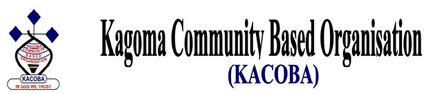
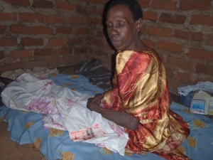

|  | ||
|
| ||
| 
One of the HIV/AIDS victim in Jinja District KACOBA offices are located in
Stella-Najjanankumbi, on Entebbe Road, Kampala Read More
Previous Projects: HEN Project| I am a person who matters| Women's initiatives| Youth initiatives| Alcoholic Synonymous| Facility Based Health Care| Community and Home Based Health Care|
Post Your Comment |
Kagoma Community Based Organisation (KACOBA) is a registered not for profit, Community Based and Non Government Oganisation, (Certficate number S.5914/3111-NGO Board Uganda), founded in 1995 and first registered in 2000. The organisation's major aim is to improve the quality of life of the neediest and marginalised groups of people in Uganda. Some of KACOBA's orphaned children participate in tree planting as a means of mitigation.
|
|
|
| ||
Go to top |
||
|---|---|---|